Hardware Configuration
Hardware Configuration
The Hardware Configurator enables you to design network hardware with characteristics different from the generic equipment models provided with SP Guru Transport Planner. The Hardware Configurator relies on two major building blocks:
For more information about the equipment files and the configuration algorithm, see the SP Guru Transport Planner User Guide.
Note—The example equipment files are located in the following directory:
<install_dir>\<release>\models\std\wdmguru\examples.Procedure 7-1 Configuring Hardware in SP Guru Transport Planner
- Open the WDMGuru_Tutorial_Hardware_Configurator project.
- Select File > Open...
- Select the WDMGuru_Tutorial_Hardware_Configurator project, then press Open.
The example project loads, and scenario scenario1 appears in the workspace.
- Groom a SONET traffic matrix.
- Select Design > Groom DCL to OCH Traffic > Fixed Routes...
- Select the DCL traffic matrix DCL_0.
- Select OC-48 as the bit rate for the OCH traffic matrix and Hop Count as routing cost. Put a checkmark next to Optimize, 1+1 Protection in DCL, Client Protection and Node Disjoint.
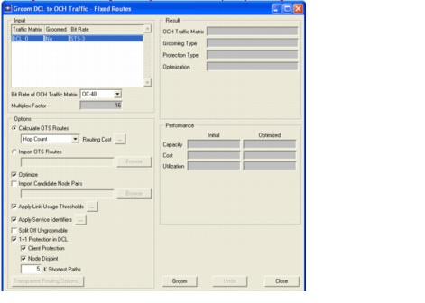
- Press Groom.
The Grooming Optimization Progress dialog box appears.
- When the status is Finished, close this dialog box.
- Close the Groom DCL to OCH Traffic - Fixed Routes dialog box.
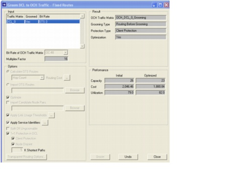
- The SONET traffic matrix DCL_0 and the wavelength traffic matrix OCH_DCL_0_Grooming (created by the grooming algorithm) are both entirely accommodated in the network. You can verify this in the DCL and OCH layer view (use he DCL and OCH toolbar buttons).
After you complete the initial network design, you can assign the appropriate set of hardware for this design using the Hardware Configurator.
- Import the hardware library.
- Select Hardware > Import Hardware Library... This dialog box allows specifying the files that contain the device and card equipment.
- Select ... in the Devices table to import a device file. Browse for the file devices_tutorial.csv in the example directory.
- Select ... in the Cards table to import a card file. Browse for the file cards_tutorial.csv in the example directory.
- Press OK to import the equipment files and to add the devices and cards specified in the files to the equipment database.
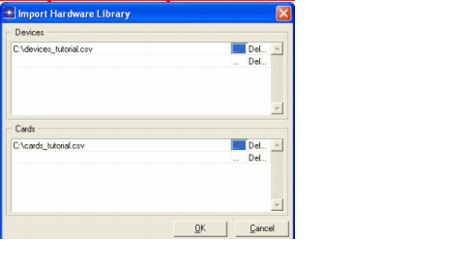
- Browse the equipment files.
- From a spreadsheet program or text editor, open the example file devices_tutorial.csv.
This file contains specifications for the different equipment types supported in SP Guru Transport Planner.
The first three columns in the device file (Vendor, Family, and Model) define a unique device. The Cost column contains the base cost of the device. Note that the first device (dxc1) has 2 base costs (separated by a +), implying this device is upgradeable. It has an initial cost of 500 and a cost of 850 after the upgrade.
The WDMG:Type column specifies the SP Guru Transport Planner equipment type(s) supported by the device. The WDMG:LS column defines the corresponding line system in SP Guru Transport Planner and the WDMG:Bit Rate column specifies the aggregation bit rate for some devices.
The last columns define the slot types supported by a device. The cards fitting into a certain slot are specified in the card file, by referring to the name of the slot type. A device contains a number of slots of a particular type. The upgradeable device dxc1 has an initial number of 16 and 32 after the upgrade.
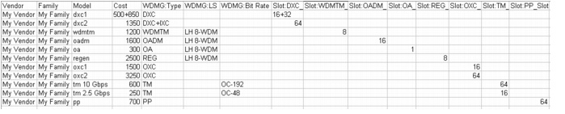
- Open the example file cards_tutorial.csv. This file determines which cards fits in which slot type.
- The first two columns in the card file (Vendor and Model) define a unique card. The Cost column contains the cost of a card.
- The Fits In column relates the cards to the devices: it specifies which card fits in a particular slot type. The Slots Taken determines the number of slots taken by the card.
- The last columns define the client interfaces supported by the card.
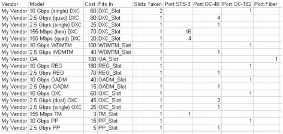
- Manage the hardware library.
- Select Hardware > Manage Hardware Library... In this dialog box, the devices and cards in the equipment database can be verified per SP Guru Transport Planner equipment type.
- Select DXC (Type). All DXC devices and cards and their cost are shown. The Consider for design column indicates whether the device or card can be used for the next configuration run. Left clicking on Yes can change this setting. In this example, we are using all cards and devices for the configuration run.
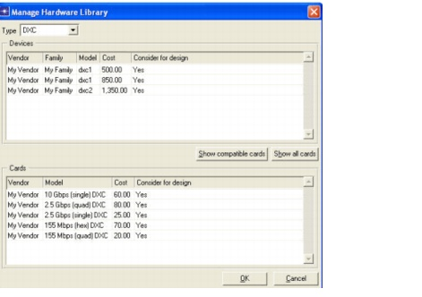
- Right-click on a device or card and select View Equipment Details to see the detailed properties of a device or card.
- Close the Manage Hardware Library dialog box.
- Configure the hardware (design run 0).
- Select Hardware > Configure Hardware... This dialog box allows performing the hardware configuration for each SP Guru Transport Planner equipment type present in the network.
- Select Best Family Network Wide for each type, implying the same family for each device of a certain type in the network. Note that for SP Guru Transport Planner types that are not present in the given network the setting "Not needed" is fixed in the Configure column.
- Uncheck Upgrade Design and choose Exhaustive search to perform an exhaustive search over all equipment for a particular SP Guru Transport Planner type in the hardware library and a configuration for each possibility, and choose the most economic solution for each SP Guru Transport Planner type.
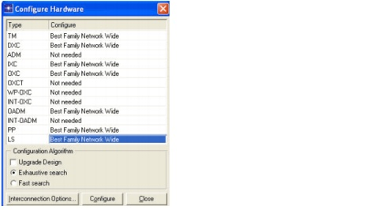
- Press Configure.
The Hardware Configurator Report dialog box appears to show the results of the hardware configuration algorithm; note that a valid configuration has been found for all equipment in the network.
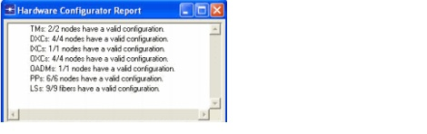
- Close the dialog box.
- Inspect the installed hardware (design run 0).
- Select Hardware > Open Hardware Browser. The Hardware Browser dialog box gives an overview of all the installed hardware in the network.
- Select By Node to inspect the installed equipment per node.
- Select node_06. This node contains one patch panel device and one DXC device. The patch panel (type pp) contains 16 cards resulting in 16 used slots (out of the 64 available). On the DXC (of type dxc1) six of the 16 slots are in use.
- Click on the + icon next to a device to see the cards on the device. The DXC in node_06 contains six cards: two 2.5 Gbps (quad) DXC cards (for the trunk ports), three 155 Mbps (hex) cards and one 155 Mbps (quad) card (both for the tributary ports). Note that instead of installing a fourth 155 Mbps (hex) card, the algorithm has chosen for the cheaper 155 Mbps (quad) card.
- Click on + left of a card to inspect the ports on the card: two ports on the 155 Mbps (quad) card are in use (with STS-3 as interface).
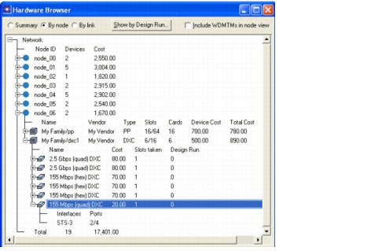
- Select By Link. This shows the installed equipment per link. Select the link node_06 <-> node_05; two WDM terminal multiplexers, six optical amplifiers and one regenerator are installed on this link. The total cost of the equipment on this link is 7600.
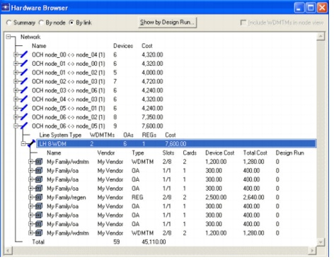
- Close the Hardware Browser.
- Generate the hardware web report (design run 0).
- Select Hardware > Generate Web Report...
The web browser is launched and the hardware configurator web report appears.
This report gives an overview of the installed hardware in the network.
- Select Summary. This table gives an overview of all installed hardware per SP Guru Transport Planner equipment type.
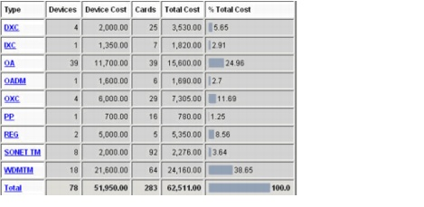
- Click on DXC in the Summary table.
A new table appears with information about all DXC devices installed in the network.
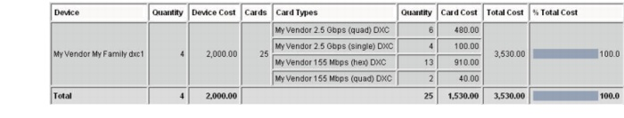
- Select Summary By Node to get an overview table of the hardware installed in the nodes.
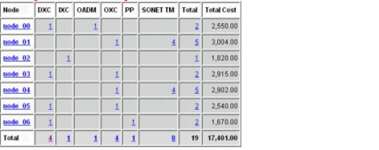
- Click on node_06 in the Summary By Node table: an overview of all devices installed in node_06 is displayed.
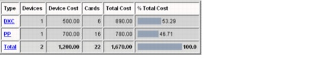
- Select DXC in the node_06 table. This table lists the DXC devices and cards in the node.
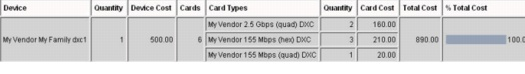
- Select Summary By Link to inspect the hardware installed on the links.
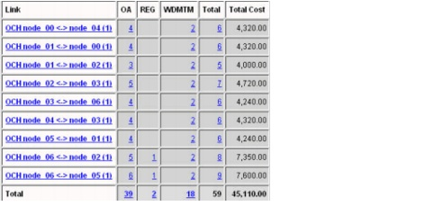
- Click on node_06 <-> node_02 in the Summary By Link table to get an overview of all devices installed on the link between node_06 and node_02 is given.
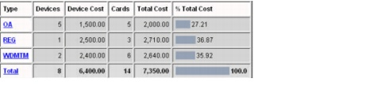
- Select OA in the node_06 <-> node_02 table. A table listing all optical amplifier devices and cards installed on the link is displayed.
- Close the hardware web report.
- Route an OCH traffic matrix.
- Select the Design > Route DCL/OCH Traffic... dialog box.
- Select the OCH Layer and the traffic matrix OCH_0.
- Choose Protected (Protection) and OTS Link Disjoint. Put a checkmark next to Node Disjoint and Client Protection. Select Sequential (Routing Algorithm), Longest First (Connection Order), Hop Count (Routing Cost). Uncheck Allow Equipping Dark Bands (Link Model Options), Impose Node Limitations, and Constrain OCH Routing By DCL Node Size (Node Model Options).
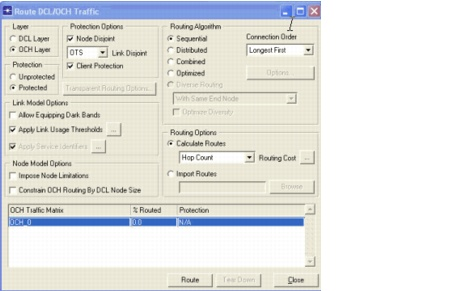
- Press Route.
The Routing Results dialog box indicates that only 26 percent of the traffic matrix is accommodated in the network. Note that the bit rate of this traffic matrix is OC-192 (i.e. 10 Gb/s). This can be checked in the Network > Traffic Matrix Editor dialog box.
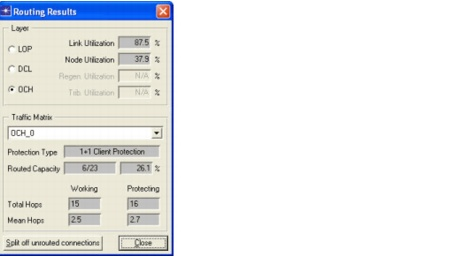
- Close the Routing Results and the Route DCL/OCH Traffic dialog boxes.
- Configure the hardware (design run 1).
- Select Hardware > Configure Hardware...
- Check Upgrade Design. This implies that the configuration algorithm starts from the present configuration (no present devices are removed) and only adds new devices and cards if needed. Note that the newly added devices and cards are marked with design run number 1, while those that were already present are marked with design run number 0.
Note—When a design is upgraded, only the devices of the current family are upgraded or added—no new equipment family is added. That is why the Configure column is fixed to Best Family per Node.
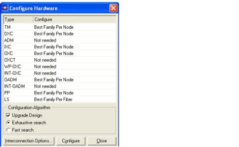
- Select Exhaustive Search and click on Configure.
The Hardware Configurator Report dialog box shows that a valid configuration has been found for all equipment in the network.
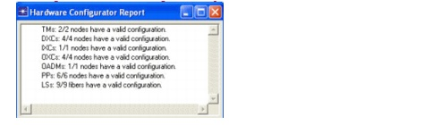
- Close this dialog box.
- Inspect the installed hardware (design run 1).
- Select Hardware > Open Hardware Browser.
- Select By Node and node_06.
The patch panel device and the DXC device were already installed during the previous design run. After design run 0, the number of available slots on the DXC was 16, but now the number of slots is 32. The DXC of type dxc1 is an upgradeable device and it has been upgraded to host all the needed cards.
The DXC now contains 14 cards. Six of the cards were installed during the previous design run (0), and eight 10 Gbps (single) cards were added during the current design run (1). Note that the interfaces on the latter cards are OC-192 interfaces, which is the bit rate of the traffic matrix OCH_0.
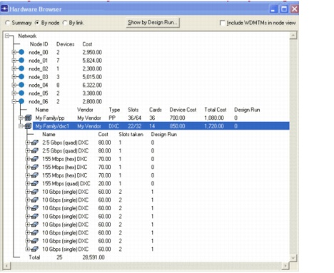
- Click on the Show by Design Run... button to customize the view of the Hardware Browser so it shows only the hardware included up to a specified design run or of one specific design run.
- Close the hardware browser.
- Examine the upgrade history.
- Select Hardware > Show Upgrade History. These dialog boxes show the cost of installed equipment per design run.
- Select Equipment Types in the lower left corner of the tabular dialog box. The total cost of the equipment is displayed per design run. Note that only a smaller part of the equipment has been added during the last design run.
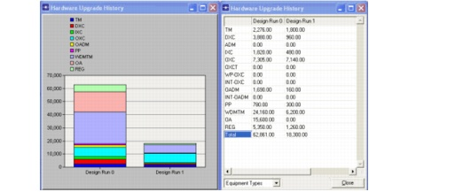
- Select Device Types to verify the cost of the devices per design run. Only OXC and TM devices have been added during the last design run.
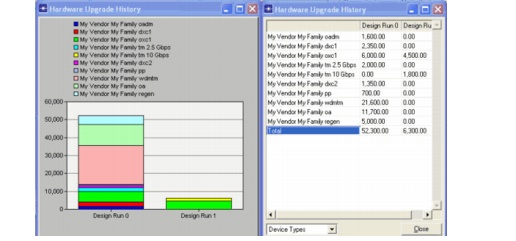
- Select Card Types. The cost of the cards per design run is displayed. Because the traffic matrix OCH_0 has bit rate OC-192, all added cards during the last design run are 10 Gbps cards.
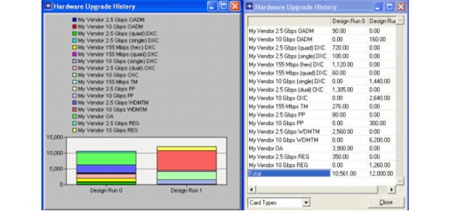
- Close the dialog boxes.
- Close the project
End of Procedure 7-1
| Home © 1987-2007 OPNET Technologies, Inc. All Rights Reserved. This software may be covered by one or more U.S. Patents. See complete patent notice in the Legal Notices section. OPNET Support Center |